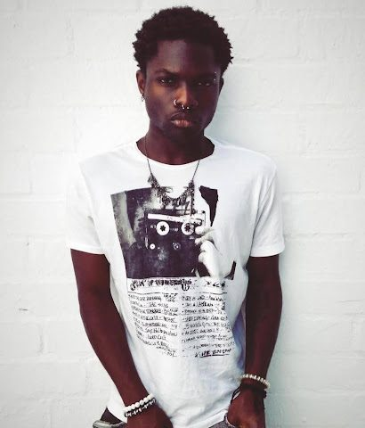

Lucy makes incredibly in-depth music, borrowing from everything to create a truly unique musical fingerprint. Influence from artists such as Playboi Carti and Chief Keef throughout his vocals, two artists who have come to define the idea of the modern rapper

Lucy Bedroque (Jeremiah Mark) was born on May 7, 2006. Originally from The Bronx, New York, Bedroque spent significant time in California and currently in Los Angeles. He began making music around nine years old. Much of his early work was recorded in his bedroom, including material during his first year at university.

Originally known as lostrushi (and briefly "loru"), he officially rebranded to Lucy Bedroque in March 2024.
The name (Lucy Bedroque) combines "Lucy" (Latin for light) and "Bedroque" (metaphorical for foundation), representing the idea that "light is the foundation" of his work.
Bedroque blends rage-rap (influenced by Playboi Carti and Chief Keef) with the glitchy maximalism of digicore and hyperpop. He cite Japanese Culture such as the Visual Kei band Malice Mizer as a major inspiration. His work incorporates elements from Crystal Castles, Sweet Trip, Stereolab, and Radiohead. |
.jpg)
.jpg)